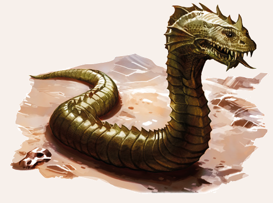

Basilisken (auch Krötengezücht oder auf Isdira bha`za genannt) sind mehrere Schritt lange, schlangenartige Kreaturen. Sie haben einen metallisch glänzenden Kamm auf dem Kopf und gelten als Schöpfung des Namenlosen. Schon die Erwähnung ihres Namens verbreitet Angst und Schrecken, denn sie gehören zu den gefährlichsten Wesen, die Aventurien kennt. Auf wen ihr Blick fällt, der wird augenblicklich und permanent versteinert. Der bloße Anblick des Monstrums hingegen hat, entgegen mancher Behauptung, jedoch keine Auswirkung. Ihre Aura lässt Pflanzen verfaulen, Erde schimmeln, verwandelt Wasser in giftige Brühe, Luft in ätzendes Gas und tötet alle Tiere im Umkreis. Gebiete, die sie durchqueren, werden zu wochenlang nicht betretbaren Giftpfuhlen und verkommen danach zu einer Einöde, in der erst nach Monaten wieder etwas wächst und in denen Menschen von Übelkeit, Kopfschmerz und Sehstörungen bis hin zu Blindheit geplagt werden. Wer einem Basilisken begegnet, hat kaum eine Chance zu überleben: Der Gifthauch oder eine Berührung führen zum direkten Tod oder tödlichem Siechtum, gegen das keine Heilung außer Magie und Götterwirken bekannt ist. Wer nicht außerhalb des Blickfeldes bleibt, wird in Stein verwandelt. Wem es aber gelingt, eines der Untiere zu töten, der darf sich stolz Basiliskentöter nennen, ein Titel, der wegen allzu vieler Hochstapler aber in Verruf geraten ist. Noch im Tode wirkt der Basiliskenblick sieben Stunden lang versteinernd, eine Berührung ist erst nach sieben Tagen gefahrlos möglich, die giftige Aura verschwindet erst nach sieben Wochen.

Verbreitung
Der Basilisk ist eine der seltensten Kreaturen Aventuriens.
Der Legende nach entsteht er alle siebenhundert Jahre, wenn aus einem Hahnenei eine Kröte schlüpft.
Ob das wahr ist, sei dahingestellt, aber es steht fest, dass sie auf magische, unnatürliche Weise entstehen.
Unabhängig von den klimatischen Bedingungen können sie überall auf dem Kontinent leben.
In den abgelegenen Schluchten jenseits des Ehernen Schwertes vermuten die Gelehrten sogar mehr als ein Dutzend dieser Kreaturen.
Gerade weit abseits der menschlichen Zivilisation mag solch ein Wesen heranwachsen und sich irgendwann auf seine verheerende Wanderung machen, die so weit und lange verlaufen kann, bis es endlich gestoppt wird.
Vom Basiliskenkönig, einer von der uralten Schwarzelfe Pardona um 3.000 v. BF erschaffenen Kreatur, wird berichtet, dass er die Hochelfenstadt Simyala im Reichsforst vernichtete.
Der Legende nach erschlug erst zwei Jahrtausende danach der Held Geron der Einhändige das Biest.
Doch selbst der große Held war nicht gegen das Gift des Basiliskenkönigs gefeit und starb nach Erlegen des Ungeheuers.
Lebensweise
Wo immer ein Basilisk haust, geht alles zugrunde.
Selbstredend hat ein solch einzelgängerisches Wesen keine Fressfeinde und kennt weder Furcht noch irgendein soziales Verhalten.
Das Krötengezücht verfügt über keinerlei Intelligenz, es kämpft und jagt nicht, sondern existiert einfach.
Es ist unklar, was genau der Basilisk zum Überleben benötigt. Manche Gelehrte glauben, er fresse das Aas und die Überreste der verdorrten Pflanzen und Tiere.
Die meisten aber vermuten, dass er aufgrund seiner magischen Natur keinerlei Nahrung benötigt, da er von den Kräften des verdorbenen Landes zehrt.
Auch über ihren Schlaf ist wenig bekannt:
Manche gehen von normalen Schlafphasen aus (was das Besiegen der Kreatur vereinfachen könnte), andere vermuten hingegen, das Tier schlafe niemals.
An diesen Gerüchten ist mehr dran, als man vermuten könnte. Tatsächlich braucht ein Basilisk nichts - weder etwas zu trinken, noch Nahrung oder Schlaf.
Dennoch kann es geschehen, dass ein Basilisk, weil er es will, Tiere frisst oder schläft.
Über die Lebenserwartung eines Basilisken ist nichts bekannt, es ist davon auszugehen, dass er unsterblich ist und nur durch die Hand eines Helden sein Ende findet.
Basilisk
Größe: 4,00 bis 6,00 Schritt lang
Gewicht: 800 bis 900 Stein
Eigenschaften:
MU 30
KL 01
IN 20
CH 20
FF 01
GE 10
KO 25
KK 30
LeP: 250
AsP: -
KaP: -
INI: 10+1W6
SK: 13
ZK: 13
GS: 1
VW: 0
Zufällige Berührung:
AT: 3
TP: siehe Tödliche Berührung
RW: mittel
RS/BE: 13/0
Aktionen: 1
Vor- und Nachteile:
Altersresistenz,
Immunität gegen alle Gifte und alle Krankheiten
Sonderfertigkeiten:
keine
Talente:
Klettern - (keine Probe erlaubt; Basilisken können nicht klettern),
Körperbeherrschung 2 (10/10/25),
Kraftakt 13 (25/30/30),
Schwimmen - (keine Probe erlaubt; Basilisken können nicht klettern),
Selbstbeherrschung - (gelingt automatisch),
Sinnesschärfe 7 (1/20/20),
Verbergen 0 (20/20/10),
Einschüchtern 22 (30/20/20),
Willenskraft - (gelingt automatisch)
Anzahl: 1
Größenkategorie: riesig
Typus: übernatürliches Wesen, nicht humanoid
Kampfverhalten: Basilisken kämpfen nicht, aber durch ihre Kräfte sind sie dennoch furchtbare Gegner.
Flucht: Basilisken fliehen nicht.
Beute: 400 Rationen (ungenießbar und sofort tödlich, siehe Sonderregel Tödliche Berührung), Trophäe (Schuppen, 10.000 Silbertaler)
Sonderregeln:
Tödliche Berührung: Wer einen Basilisken berührt, erleidet 1W6 SP pro KR bis zu seinem Tod. Dies gilt auch für das Essen des Fleisches des Basilisken oder die Berührung mit seinem Blut.
Der Verfall kann nur durch Heilmagie oder göttliches Wirken gestoppt werden (z.B. BALSAM oder Heilsegen). Allerdings müssen dazu mindestens 3 QS entstanden sein.
Basiliskenkampf: Wer einen Basilisken im Kampf oder durch das Vorzeigen eines Spiegels töten will, muss dazu bis auf die Nahkampfreichweite lang an ihn heran.
Um sich auf diese Distanz zu nähern, muss dem Helden eine Probe auf Selbstbeherrschung erschwert um 7 gelingen, ansonsten wagt er den Versuch erst gar nicht.
Ein Held kann eine solche Probe jeden Tag einmal ablegen.
Um dem Ungeheuer einen Spiegel vorzuhalten, ist zudem eine erfolgreiche AT notwendig.
Als Kampftechnik kann Raufen verwendet werden, wenn der Spiegel in der Hand gehalten wird, oder Stangenwaffen, wenn der Spiegel an einen Stab gebunden wurde.
Auch andere Methoden, z.B. ein verspiegelter Schild, sind denkbar, entsprechend kann dann auch eine andere Kampftechnik herangezogen werden.
Der Meister kann je nach Situation, Größe des Spiegels und eingesetzter Kampftechnik die AT um bis zu 6 Punkte erschweren. Sieht der Basilisk sein eigenes Spiegelbild, erstarrt er zu Stein und stirbt auf der Stelle.
| LeP-Verlust | Schmerz | |
|---|---|---|
| 188 LeP (¾) | kein Effekt | |
| 125 LeP (½) | kein Effekt | |
| 63 LeP (¼) | kein Effekt | |
| 5 LeP und weniger | kein Effekt |
| Magiekunde / Tierkunde | (Magische Wesen / Ungeheuer) | |
|---|---|---|
| QS1 | Basilisken sind Kreaturen des Namenlosen, zum Glück gibt es nur eine Handvoll von ihnen. | |
| QS2 | Alles, was ein Basilisk anblickt, versteinert. Man kann sich davor schützen, indem man einen Basilisken nur im Spiegel anschaut. | |
| QS3 | Auch das Gebiet um den Basilisken herum ist tödlich und verseucht, aber man kann einen Basilisken töten, indem man ihn in einen Spiegel schauen lässt. Das reine Erblicken eines Basilisken lässt einen nicht zu Stein werden. |
Spiegel & Basilisken
| Spiegel | Kampftechnik | Erschwernis |
|---|---|---|
| Kleiner Handspiegel | Raufen | -6 |
| Kleiner Handspiegel, an einen Stab gebunden | Stangenwaffen | -5 |
| Mittlergroßer Spiegel, an einen Stab gebunden | Stangenwaffen | -4 |
| Großer Standspiegel | Raufen | -3 |
| Spiegelschild | Raufen | -2 |